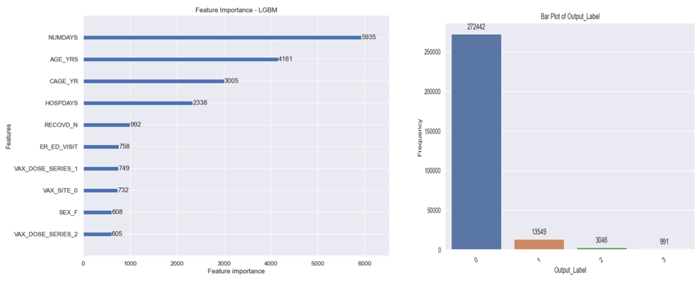

To be able to predict adverse events post COVID Vaccination using Machine Learning. An adverse event could be hospitalization, serious illness, mental disorder, death etc.
Adverse events are reported to the system VAERS. Obtained data from the Vaccine Adverse Event Reporting System (VAERS) website [Link: https://vaers.hhs.gov/data/datasets.html]
Females are more prone to adverse events compared to males
Age is a significant predictor. People above 40 should get the consultation of a doctor and proceed with the vaccination
Sickness encounter from the date of vaccination should be immediately addressed
The percentage of adverse events for Pfizer was higher compared to Moderna and J&J
Gender wise Impacts
Feature Importance and Target Variable Distribution